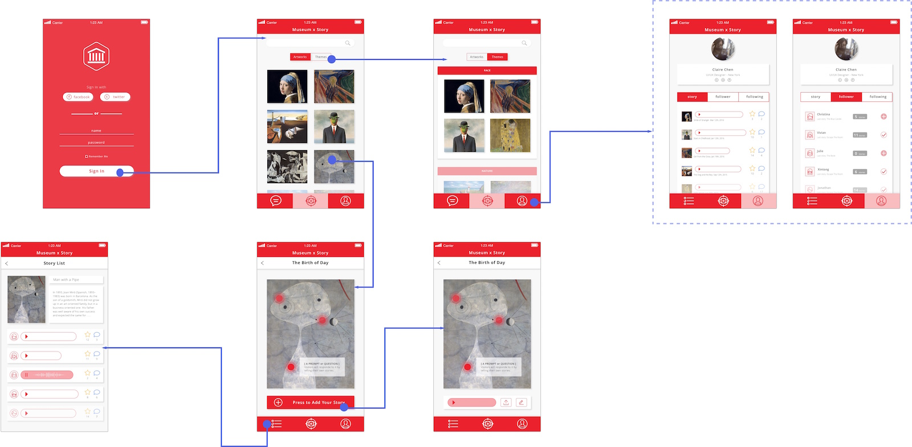

Museum x Story
A mobile application that enhances the art museum experience through the telling and sharing of stories.
Problem
There are great art muesums with a large amount of extraordinary collections in New York, and some visitors expect to learn a lot from these art museums, but usually they are not satisfied with their learning experience in these art museums.
Interview and Research Findings
By interviewing art museum visitors and reading literature related to museum education, we found that this problem was caused by:
(1) the artwork tends to lack categorization and supporting information.
(2) there is low engagement with the artwork: usually visitors only have a look at the artwork, pass by and forget the artwork very soon.
(3) there is lack of interaction among visitors: visitors usually don't have opportunity to share information/ideas with each other.
Personas
Based on interview and research findings, I created 6 personas including 2 target users and 1 non-user.
* Photo credit to Google Image
Solutions
We designed a mobile application that enhances the art museum experience through the telling and sharing of stories.
(1) ARTWORK LIST: Categorized the artwork by themes which allowed visitors to be able to click on the artwork itself to view supporting information.
(2) PROMPT & STORY: Provided users prompts about the artwork and allowing visitors to leave their stories to those prompts and listen to the stories of other users, to increased user's engagement with the artwork.
(3) SHARING & COMMENTING: Increased online interaction amongst visitors when they share stories and comments through the app. In addition, increased social interaction amongst visitors when they talk with each other face-to-face, because they are inspried by the information within this app.
Interaction Map

My Contributions
Literature Review UX Research UX Design UI Design Prototype
Tools Used
Sketch Photoshop